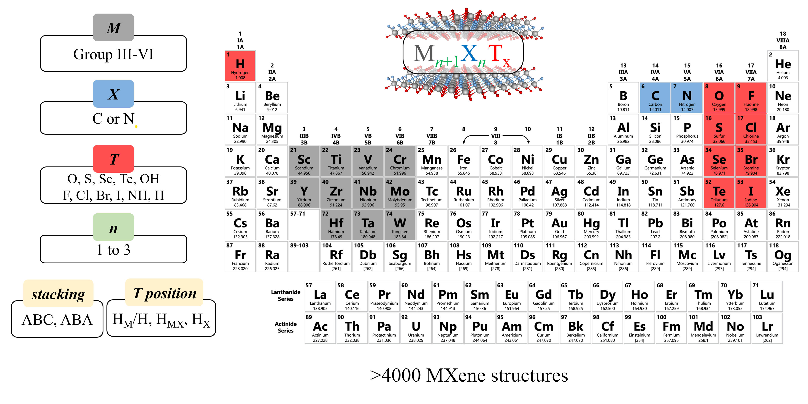

This database was created based on the results obtained after a comprehensive computational screening of over 4000 MXene structures, published in Energy Environ. Mater. 2024, 7, e12774 and J. Mater. Chem. A 2023, 11, 13754-13764. It has been used to develop the MXgap program, a Machine Learning tool to predict MXene bandgaps. The database is oficially published in ACS Catal. 2025, 15, 14403-14413. So, if you use this database, please cite:
D. Ontiveros, S. Vela, F. Viñes, C. Sousa, ACS Catal., 2025, 15, 14403-14413. DOI: 10.1021/acscatal.5c04191
On the website, you can easily search for various MXene structures and retrieve essential information such as lattice parameters, widths, bandgap information, and even download the optimized CONTCAR file.
Keep in mind that this is a smaller version of the full one used to train the MXgap models, just to make the web. The full official database can be found at https://doi.org/10.5281/zenodo.14858915, and can be cited through the corresponding publication: ACS Catal. 2025, 15, 14403-14413.
If you are curious about me or my work, you can check out my webpage or you can contact me for more information.
- Diego Ontiveros
